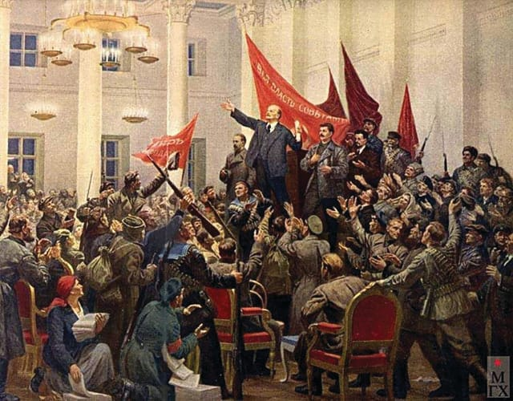
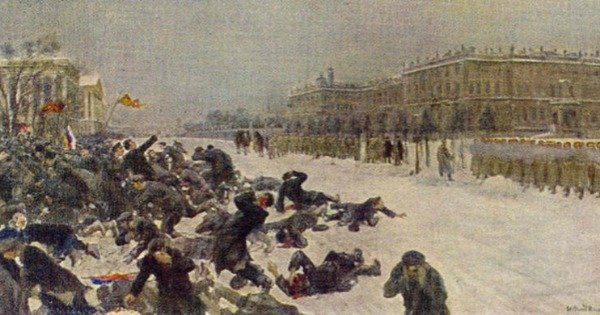
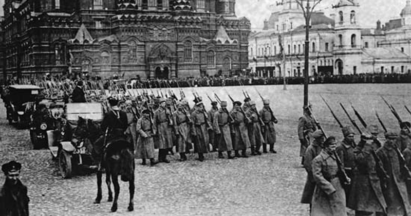

Revolução Russa
O que foi a Revolução Russa? Resumo:
A Revolução Russa foi o processo revolucionário por meio do qual a Rússia deixa de ser uma monarquia absolutista governada pelo Czares Romanov e se torna uma república socialista, a União Soviética. Após movimentos revolucionários ocorridos no contexto da terrível participação Russa na Primeira Guerra Mundial, o governo czarista foi destruído e em seu lugar foi construída a União Soviética.
Antecedentes da Revolução:
A Revolução Russa foi a culminação de um processo histórico bastante longo, com raízes no século XIX. Para compreender seus antecedentes, é necessário ter em mente que a situação da Rússia ao final do século XIX e início do XX era bastante diferente do restante da Europa: o país não tinha passado pelos processos de revoluções liberais, que desmontaram as monarquias absolutistas criando governos representativos, nem pela Revolução industrial, que desmontou a estrutura servil camponesa e criou o operariado urbano.
O panorama russo era bastante diferente daquele encontrado em outros países europeus na mesma época: seu governo era uma monarquia absolutista, liderada pela família Romanov, em um modelo chamado czarismo. A população era majoritariamente agrária e vivia no campo. A partir da década de 1860, teve início a Revolução Industrial no país por iniciativa do próprio czar, o que levaria ao rápido desenvolvimento de centros urbanos como São Petersburgo (com indústrias siderúrgicas) e Moscou (com indústrias têxteis).
Apesar disso, as condições de vida pioraram, com a fome, o desemprego e a diminuição dos salários. A burguesia também não era beneficiada, pois o capital estava concentrado nas mãos dos banqueiros e dos grandes empresários. A oposição ao governo crescia. Um dos maiores partidos de oposição era o Partido Social Democrata, mas seus líderes, Plekhanov e Lenin, tinham que viver fora da Rússia para fugir das perseguições políticas. O Partido Operário Social-Democrata Russo era crítico com a política do país. Porém, havia divergências em como solucionar os problemas da Rússia. Isto acabou por dividi-lo em duas correntes:
Causas da Revolução Russa:
A Revolução Russa teve como causas: a crise da monarquia absolutista czarista; a rápida industrialização, que aprofundou as desigualdades políticas e sociais; a organização de um movimento socialista revolucionário. O início do século XX foi marcado por eventos que contestavam a ordem czarista, todos violentamente reprimidos. Por exemplo:em janeiro de 1905, um grupo de operários participava de uma manifestação pacífica em frente ao Palácio de Inverno de São Petersburgo, uma das sedes do governo. O objetivo era entregar um abaixo assinado ao czar, pedindo melhorias. A guarda do palácio, assustada com a multidão, abriu fogo matando mais de mil pessoas. O episódio ficou conhecido como Domingo Sangrento e provocou uma onda de protestos em todo o país.
Diante da pressão revolucionária, o czar promulgou uma Constituição e permitiu a convocação de eleições para a Duma (Parlamento). A Rússia tornava-se assim uma monarquia constitucional, embora o czar ainda concentrasse grande poder, e o Parlamento tivesse uma atuação limitada. Na realidade, o governo ganhou tempo e organizou as reações contra as agitações sociais e os sovietes. Estes eram assembleias de operários, soldados ou camponeses que se organizaram após a Revolução de 1905. Mais tarde teriam um papel essencial da Revolução de 1917. Ainda em 1905, outro fator de descontentamento foi a derrota na guerra Russo-japonesa. A Rússia perdeu o conflito para o Japão, que era considerado um povo inferior, e teve que ceder algumas ilhas para este país.
Estouro da Revolução Russa:
O que chamamos de Revolução Russa, de fato, foi o estopim, ou seja, a tomada de poder pelos sovietes, em outubro de 1917, que vinham se organizando com a população desde pelo menos 1905, em protesto contra os czares e seus privilégios, a fome e a repressão.
Assim como a Guerra contra o Japão foi um gatilho em 1905, a partir de 1914, a Primeira Guerra Mundial também mexeu com a conjuntura interna russa (sendo inclusive apontada por muitos como um dos motivos da revolução), pois a Rússia fez parte da Tríplice Entente (junto da Inglaterra e França) e, como era um país atrasado, não possuía os mesmos meios tecnológicos das demais nações, o que fez com que perdesse diversas batalhas, inclusive algumas importantíssimas para a Alemanha, que conquistou parte de seu território.
Como sabemos, a I Guerra Mundial teve objetivos imperialistas e, no que refere especialmente a Rússia, havia o temor da ascensão alemã e invasão de territórios, pois ela havia passado recentemente por unificação e ameaçava outras nações. O fim do czarismo estava próximo, com os problemas econômicos, a repressão e, agora, mais uma derrota militar, e aconteceu em fevereiro de 1917.
Revolução de Fevereiro (Revolução Branca):
Em fevereiro de 1917, o czar abdicou de todo o seu poder, após tantos problemas, como crise econômica, derrotas em batalhas importantes e reiteradas manifestações da população durante anos. Assumiu, então, o Governo Provisório, que funcionou como um Parlamento liberal europeu. À frente desse governo estava Alexander Kerenski, que era socialista, porém, reformista (menchevique, como vimos). Esse período é chamado de República da Duma, Revolução de Fevereiro, Revolução Branca ou ainda Revolução Menchevique.
Entretanto, a Rússia não tinha saído da guerra, e as pessoas ainda passavam fome, logo, seriam necessárias outras mudanças. Com isso, a oposição bolchevique se fortaleceu nos sovietes. Liderada por Lenin e Trotsky, sob o lema “pão, paz e terra”, indicava, além da saída da guerra, a redistribuição (expropriação e divisão) das grandes propriedades de terra, a fim de ajustar o fornecimento interno de comida para a população. Paralelamente, a Guarda Vermelha ia sendo formada por Trotsky. Posteriormente, essa guarda passou a se chamar Exército Vermelho, pós- revolução. Até então, ela era um grupo revolucionário e armado dos bolcheviques, que visava à tomada do poder.
Revolução de Outubro (Revolução Vermelha):
Em 7 de novembro de 1917 ou 25 de outubro no calendário juliano (que a Rússia ainda usava), os Bolcheviques tomaram o Palácio de Inverno, bombardeando-o, e depois todos os outros prédios públicos russos, que passaram a ser chamados de Conselhos de Comissários do Povo.Kerensky, menchevique que estava à frente do Governo Provisório, fugiu, e assim teve início o governo bolchevique, cuja primeira publicação oficial foi o “Apelo aos trabalhadores e camponeses”, de Lenin, primeiro governante revolucionário. Por meio dela, foi dado “todo o poder aos sovietes”. Uma das primeiras medidas foi também retirar o país da I Guerra Mundial.
- Consequências da Revolução Russa:
Guerra Civil Russa:
Claro que tantas mudanças assim não agradaram a todos. Dessa forma, houve a oposição ao governo de Lenin, formada por antigas forças czaristas e mencheviques, que se uniram também aos países que não aceitaram a saída russa da guerra. Esses contrarrevolucionários se organizaram com armas no Exército Branco (em contraposição ao Vermelho) e promoveram uma verdadeira guerra civil, em 1918, que durou até 1921, quando os bolcheviques, mais uma vez, saíram vitoriosos.
A saída da Rússia da guerra só foi possível por meio da assinatura de um acordo com a Alemanha, chamado Tratado Brest-Litovsk. Os opositores acreditavam que essa aliança havia prejudicado muito os russos, que perderam territórios e reservas de carvão. Por outro lado, Trotsky, comandante do Exército Vermelho, percebia o quanto este estava enfraquecido para mais batalhas. Lenin, por sua vez, entendia que a guerra era impopular entre o povo desde o começo. Além dos dois exércitos internos, soldados estrangeiros invadiram a Rússia, almejando ajudar a restaurar a monarquia e instabilizar os bolcheviques. Ao longo de três anos, muitos foram mortos em batalhas — estima-se que de quatro a dez milhões de pessoas. Os opositores se enfraqueceram após a vitória final bolchevique, em 1921.
Conclusão da Revolução Russa:
Em 1922 foi estabelecida a União das Repúblicas Socialistas Soviéticas (URSS), sob liderança de Lenin. Após sua morte, em 1924, iniciou-se uma luta pelo poder entre Trotsky e Stalin. Derrotado, Trotsky foi expulso do país e, em 1940, foi morto na cidade do México, por um assassino a serviço de Stalin. Sob seu governo, a URSS conheceu uma das mais violentas ditaduras da história, ao mesmo tempo que passava por um crescimento econômico vertiginoso. Durante a II Guerra Mundial, o país seria um dos principais inimigos do nazismo, aliado dos Estados Unidos e do Reino Unido. Após o conflito, seria atribuída à condição de segunda potência mundial.